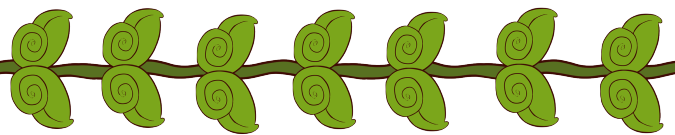

Grup looks out over their small world and, seeing it grey and lifeless, decides to set out and make a difference. On their mission to clean up the world, Grup will need help from you to navigate obstacles and clean pollutants from the air, water, and ground. Help guide Grup along their adventure to bring back color to their world. Grup knows that even the smallest change can make a difference...
Grup is the work of four talented individuals for their CSS 385 Game Design class at the University of Washington, Bothell. We started with a piece of art and an idea and ran with it. We knew that we wanted the game to be laid back, relaxed, and casual. We wanted a small challenge on the platforming levels and a nice visual reward when the player cleared the pollutants.
We also wanted to make a statement that even the smallest actions can have an impact, especially when it comes to the environment. That is why each pollutant cleared returns color to the neighboring area. Grup's world is not huge, but Grup's actions make an impact in their world.
Grup is rated "E for Everyone". The first release of Grup is up and playable, just click the link "Play Game" up in the menu. Currently, Grup is available for play online and download for Windows.